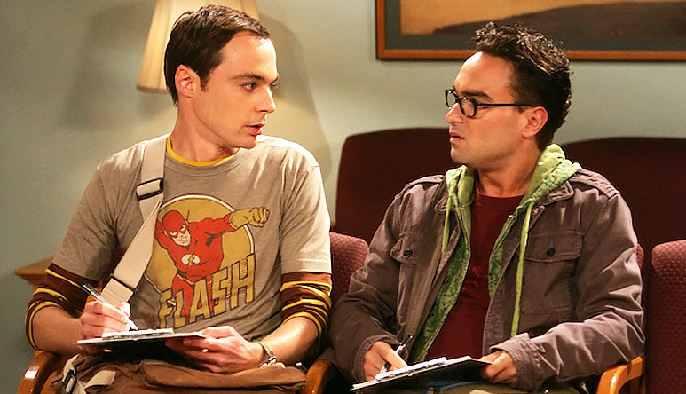

Теорія великого вибуху (телесеріал)
.jpg)
Теорія великого вибуху (англ. The Big Bang Theory[5]) — американський серіал, створений Чаком Лоррі і Біллом Предді.
Серіал розповідає про життя двох молодих талановитих фізиків, Леонарда та Шелдона.
Назва
Назва серіалу «The Big Bang Theory» є англійською грою слів: з одного боку, назва серіалу походить від
найменування
фізичної теорії утворення Всесвіту в результаті великого вибуху. Відповідно до цієї теорії, Всесвіт існує лише-->
скінченний час. Автором терміну Великий вибух вважають британського астронома Фреда Гойла, який використав цю назву
в насмішку над теорією, якої не поділяв і яка на той момент мала офіційну назву теорія динамічної еволюціонуючої
моделі. Але також сленговий вислів «Big Bang» у англосаксонській культурі позначає чоловічий оргазм. Назва
телесеріалу обігрує таким чином одночасно дві сторони головних героїв: їхні стосунки і з наукою, і з дівчатами.
Сюжет
Двоє талановитих фізиків, Леонард і Шелдон, вважають себе великими мислителями (сумарний IQ — 360). Але їхня
геніальність анітрохи не допомагає їм спілкуватися з людьми, особливо з жінками. Все починає змінюватися, коли
навпроти них поселяється білявка Пенні. Леонард починає цікавитися нею, проте Шелдон розуміє, що мріям його друга не
судилося збутися (Ви з нею належите до різних біологічних видів). В свою ж чергу Пенні думає про них, як про милих
вчених.
Варто також відзначити дивних друзів головних героїв: Говарда Воловіца, який любить вживати фрази шістьма різними
мовами, і Раджеша Кутрапалі, який не може промовити ані слова до дівчини, якщо не вип'є хоча б трохи алкоголю. Усі
персонажі серіалу відрізняються неабияким розумовими здібностями, у них велике наукове майбутнє, вони мають «свої
фішки» та звички.

Основні дійові особи
Леонард Гофстедтер (Джонні Галецкі)
Блискучий фізик-експериментатор (IQ 173 бали), має ступінь доктора філософії (отримав у 24 роки), працює в одному із
провідних фізичних інститутів на кафедрі експериментальної фізики, грає на віолончелі, любить комп'ютерні ігри,
комікси, фантастичні серіали, збирає мініатюри героїв коміксів (деякі досі зберігає нерозпечатаними — вважається, що
після тривалого часу їхня колекційна вартість зросте багаторазово). Живе разом зі своїм другом Шелдоном. У першій
серії серіалу закохується в Пенні, і з тих пір намагається справити на неї приємне враження, але по дорозі до її
серця потрапляє у безліч комічних ситуацій (багато з яких відбуваються з вини його друзів, особливо Шелдона).
Незважаючи на свою геніальність, має погані навички спілкування зі звичайними людьми, особливо з жінками. У нього
було лише дві дівчини, перша (Джойс Кім) шпигунка Північної Кореї втекла від нього на 27-й день їхніх відносин
(з'являється в 22й серії 3го сезону); друга (Леслі Уінкл) працює з Леонардом в одній лабораторії і використовує
близькість з ним для зняття стресу (що відбувається кілька разів на рік).
Шелдон Купер (Джим Парсонс)
Геній від фізики (IQ 187 балів), вундеркінд (отримав ступінь кандидата наук у 15 років), один із наймолодших
лауреатів премії Стівенсона, працює фізиком-теоретиком у тому ж інституті, що і Леонард, на кафедрі теоретичної
фізики, обожнює відеоігри, комікси, фантастичні серіали. За гороскопом Тілець. Водійські права отримав 2014 р. Живе
в одній квартирі з Леонардом. Має сестру-близнюка Міссі (на відміну від брата, вона звичайна дівчина, не обтяжена
величезним багажем знань). Частіше, ніж інші герої, любить давати розлогі високонаукові і гранично точні визначення
для найзвичайніших речей. Страждає від нав'язливої необхідності суворо дотримуватися правил, любить ідеальний
порядок. Шелдон вважає себе представником розвиненішого біологічного виду — так званого Homo Novus, а всіх інших
людей розумово нижчими. Вкрай погано знайомий із соціальними нормами і правилами поведінки у суспільстві, має деякі
труднощі з розпізнаванням сарказму. Шелдон — винуватець більшості комічних ситуацій серіалу.
Пенні (Кейлі Куоко)
Молода дівчина, якій 22 роки, сусідка Леонарда і Шелдона. Проста дівчина, працює в CheeseCakeFactory офіціанткою (в
8 серії — барменом). Стрілець. Пенні народилася і виросла на фермі в Омасі, потім приїхала в Лос-Анджелес, мріючи
стати акторкою (в 10 серії її беруть солісткою в бродвейський мюзикл, який провалився через жахливі вокальні дані
Пенні). Поступово Леонард і його друзі, незважаючи на їхні дивацтва, стають найкращими друзями Пенні.
Говард Воловітц (Саймон Гелберґ)

Єврей. Магістр інженерії, що працює в тому ж інституті на кафедрі машинобудування. Стверджує, що знає 6 мов (у тому
числі: російська, китайська, французька і японська), в ході серіалу періодично користується фразами на різних мовах
(не обов'язково те, що він вимовляє, відповідає тому, що він мав намір сказати — це говорить про його рівень
володіння мовами). Як і друзі, любить відеоігри, комікси та наукову фантастику. Також любить кататися на своєму
скутері. Основна проблема Говарда — він зациклений на сексі не приховує цього. Намагається вдавати із себе дамського
улюбленця, систематично застосовує на практиці сумнівні поради по знайомству з дівчатами, отримані ним із різних
джерел (найчастіше з Інтернету). Живе зі своєю мамою, хоча і стверджує, що насправді це вона з ним живе.
Раджеш Кутраппалі (Кунал Найар)
Індус. Працює в інституті з друзями на факультеті астрофізики. Мріє стати Індірою Ганді астрофізики частинок. Раджеш
дуже сором'язливий, тому не може розмовляти з дівчатами (за його словами, при дуже великому скупченні людей це
можливо), єдиний виняток: або коли Раджеш досить п'яний (у серії 8, де він розмовляє з Пенні і Лолітою Гупта), або
після застосування ліків для подолання патологічної скромності (в серії 15, де він розмовляв із сестрою Шелдона —
Міссі). У 17-ій серії другого сезону з'ясовується, що для розмови з дівчатами йому не обов'язковий алкоголь,
достатньо, щоб спрацював ефект плацебо (Раджеш випив безалкогольного пива, думаючи, що п'є справжнє). Швидше за все,
ліки для подолання патологічної скромності теж спричинили ефект плацебо. Нарешті наприкінці шостого сезону він таки
зміг забалакати з жінкою без алкоголю. Це сталось коли Радж був дуже засмучений тим що досі не знайшов собі дівчини
а Пенні прийшла його підбадьорити.